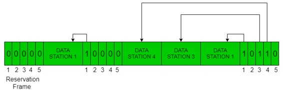
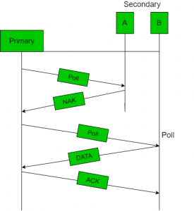
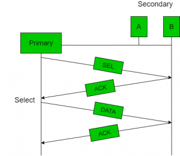
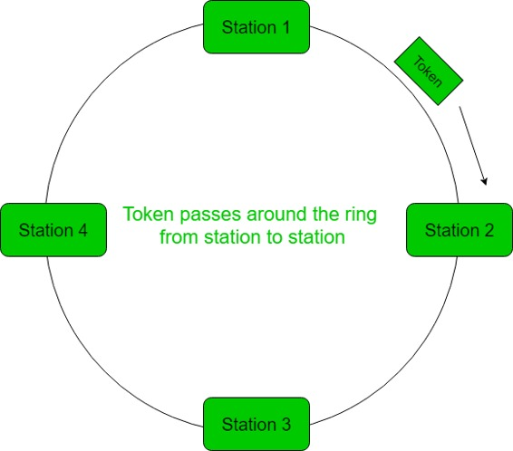

In controlled access, the stations seek information from one another to find which station has the right to send. It allows only one node to send at a time, to avoid collision of messages on shared medium.
The three controlled-access methods are:
- Reservation
- Polling
- Token Passing
Reservation
- In the reservation method, a station needs to make a reservation before sending data.
- The time line has two kinds of periods:
- Reservation interval of fixed time length
- Data transmission period of variable frames.
- If there are M stations, the reservation interval is divided into M slots, and each station has one slot.
- Suppose if station 1 has a frame to send, it transmits 1 bit during the slot 1. No other station is allowed to transmit during this slot.
- In general, i th station may announce that it has a frame to send by inserting a 1 bit into i th slot. After all N slots have been checked, each station knows which stations wish to transmit.
- The stations which have reserved their slots transfer their frames in that order.
- After data transmission period, next reservation interval begins.
- Since everyone agrees on who goes next, there will never be any collisions.
The following figure shows a situation with five stations and a five slot reservation frame. In the first interval, only stations 1, 3, and 4 have made reservations. In the second interval, only station 1 has made a reservation.

Polling
- Polling process is similar to the roll-call performed in class. Just like the teacher, a controller sends a message to each node in turn.
- In this, one acts as a primary station(controller) and the others are secondary stations. All data exchanges must be made through the controller.
- The message sent by the controller contains the address of the node being selected for granting access.
- Although all nodes receive the message but the addressed one responds to it and sends data, if any. If there is no data, usually a “poll reject”(NAK) message is sent back.
- Problems include high overhead of the polling messages and high dependence on the reliability of the controller.


Efficiency
Let Tpoll be the time for polling and Tt be the time required for transmission of data. Then,
Efficiency = Tt/(Tt + Tpoll)
Token Passing
- In token passing scheme, the stations are connected logically to each other in form of ring and access of stations is governed by tokens.
- A token is a special bit pattern or a small message, which circulate from one station to the next in the some predefined order.
- In Token ring, token is passed from one station to another adjacent station in the ring whereas incase of Token bus, each station
uses the bus to send the token to the next station in some predefined order. - In both cases, token represents permission to send. If a station has a frame queued for transmission when it receives the token, it can send that frame before it passes the token to the next station. If it has no queued frame, it passes the token simply.
- After sending a frame, each station must wait for all N stations (including itself) to send the token to their neighbors and the other N – 1 stations to send a frame, if they have one.
- There exists problems like duplication of token or token is lost or insertion of new station, removal of a station, which need be tackled for correct and reliable operation of this scheme.

Performance
Performance of token ring can be concluded by 2 parameters:-
- Delay, which is a measure of time between when a packet is ready and when it is delivered.So, the average time (delay) required to send a token to the next station = a/N.
- Throughput, which is a measure of the successful traffic.
Throughput, S = 1/(1 + a/N) for a<1
and
S = 1/{a(1 + 1/N)} for a>1.
where N = number of stations
a = Tp/Tt
(Tp = propagation delay and Tt = transmission delay)